nx9 --version

Next Generation 9
Software people can own, understand, and control.
NX9 is a philosophy-driven ecosystem of independent, self-hosted, privacy-first infrastructure software — single-binary Rust applications built for people and organizations who would rather run their own infrastructure than rent someone else's. No telemetry. No subscriptions. No mandatory cloud.
NX9 is not a framework, and it is not a cloud product that happens to support self-hosting. It is a collection of carefully engineered, single-binary Rust applications — designed for individuals and organizations that value ownership, simplicity, and independence, and built to run equally well on a Raspberry Pi, a mini PC, a VPS, or air-gapped government infrastructure.
01 — Design Philosophy
Principles That Don't Change Per Project
Nine commitments that stay constant across every NX9 application, regardless of what it does.
02 — Architecture
Core Architectural Pillars
Every NX9 application is built on the same nine foundations — the same reason a BZOD deployment and a ChronoSeal deployment feel like they came from the same shop.
Security Stack
Embedded, Not Bolted On
Modern cryptographic primitives and hardened defaults, standardized across the whole ecosystem.
Positioning
The NX9 Trade-off, Made Explicit
| Traditional Stack | NX9 |
|---|
03 — Ecosystem
Current Projects
Four projects are currently available. The NX9 ecosystem is designed to grow into a family of nine focused, self-hosted applications.
Codeberg is the canonical home of NX9. GitHub repositories are maintained as mirrors to improve discoverability and make adoption easier.
04 — Vision
Why NX9 Exists
In an era of cloud lock-in, subscriptions, and heavy dependencies, NX9 builds software that serves humanity — not platforms.
Technology should empower people to own their infrastructure, data, and future.
05 — Values
Core Values
The twelve commitments every NX9 decision is measured against.
06 — Roadmap
Roadmap to Nine
NX9 is not a single application — it is an ecosystem of nine focused, interoperable tools built around ownership, privacy, simplicity, and open standards. Four projects are already available, with five more planned to complete the vision.
Nodes are ordered by ship date, not ambition — chronoseal, dns-server, auth, and url-shortener shipped in that sequence. Five more applications are planned to complete the family of nine, reusing the same Tokio · Axum · SQLite · Argon2 · Ed25519 · BLAKE3 foundation.